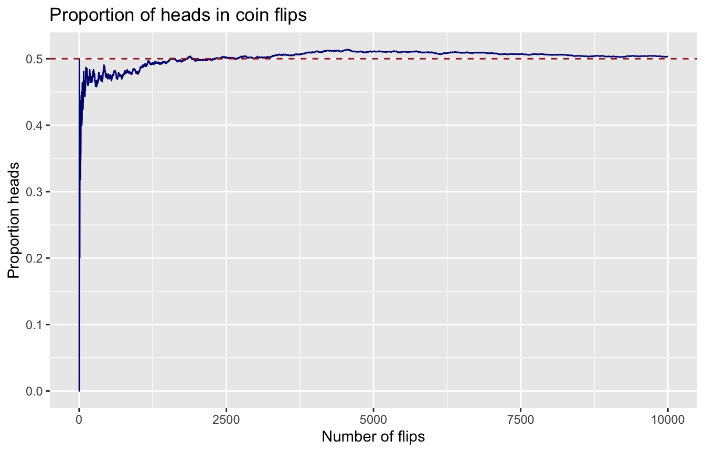
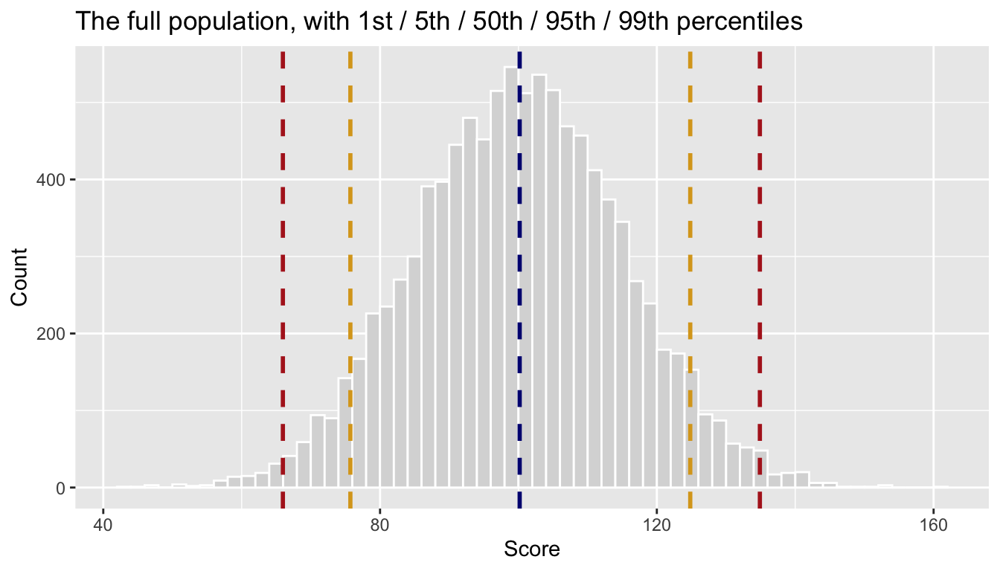
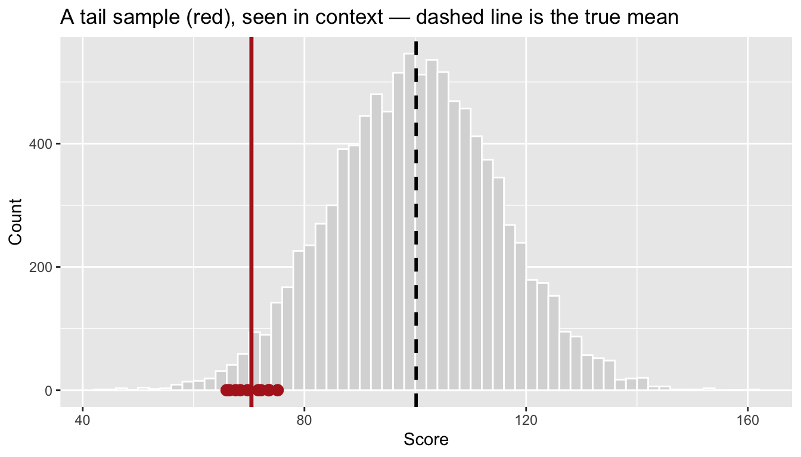
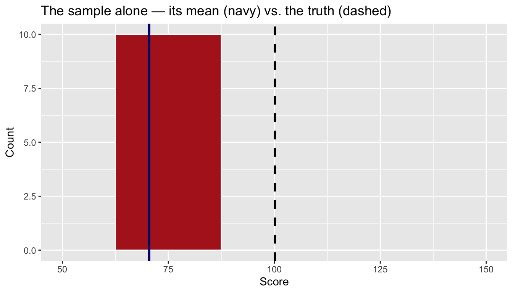
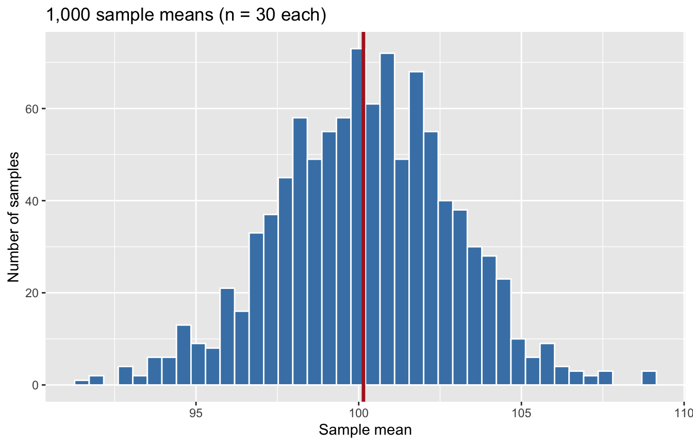
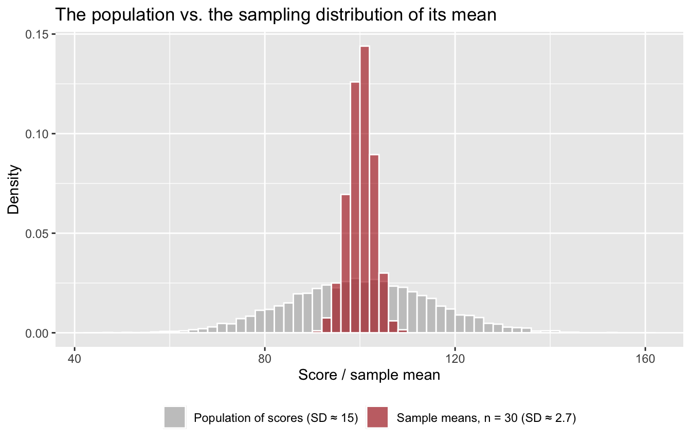
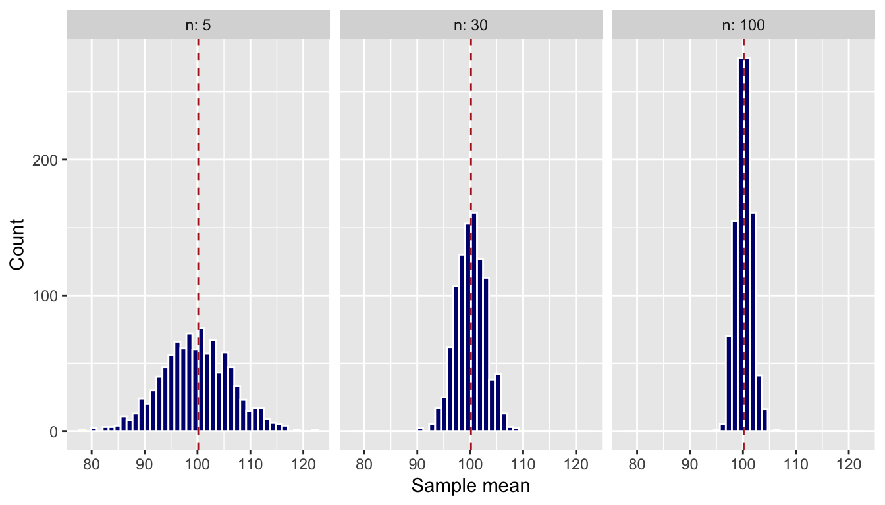
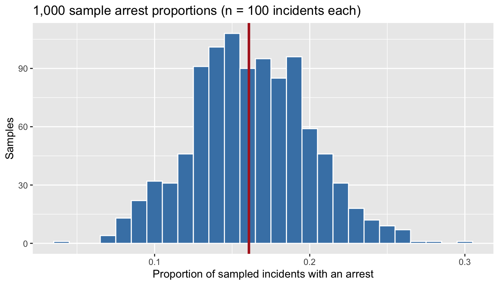
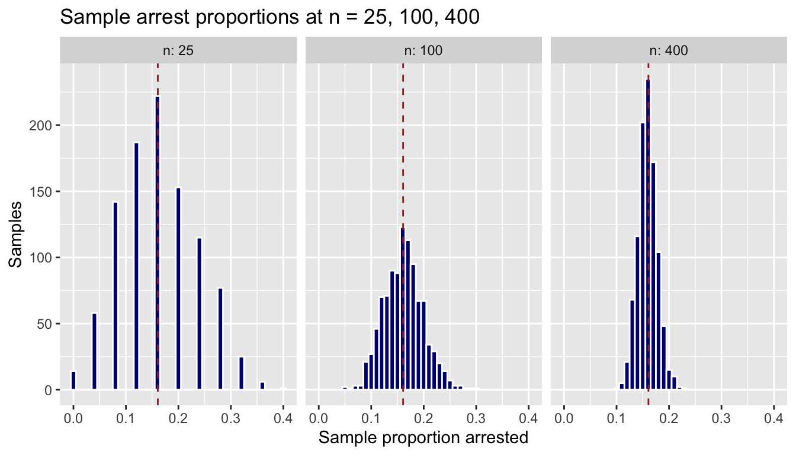

Demo Walkthrough · Session 4
Sampling distributions, the standard error, and the CLT — all by simulation
What this page is. The Session 4 lecture demos, written down step by step. Every chunk below is self-contained — copy any of them into your own R session and they run as-is. Use this page to catch up after a missed class, or to re-run what happened on screen at your own pace. (The simulations use set.seed(705), so running this page top-to-bottom reproduces the lecture’s numbers; run a chunk in isolation and your random draws will differ slightly — that’s the point of the session, actually.)
What you’ll build
- Theoretical vs. empirical probability, and the law of large numbers arriving on screen
- A population you can actually see — plus one sample, and one nasty sample from the tail
- The sampling distribution of the mean, built by brute force: 1,000 samples, 1,000 means
- The standard error: measured from simulation, checked against the formula — and the √n rule, why halving your uncertainty costs four times the data
- The central limit theorem working on the least normal variable imaginable: TRUE/FALSE arrest data
- The payoff of Session 2’s IOU: why
var()andsd()divide by n − 1
Setup
Everything below needs only the tidyverse and two course datasets — 10,000 test scores (a population we get to fully observe, for once) and the 30,000-incident Chicago sample:
1 · Theoretical vs. empirical probability
If the chance of being selected for a jury is 10% and you weren’t picked in 10 tries, should you be surprised? Answering that requires separating two kinds of probability: theoretical (a fair coin is 50/50 by mathematical reasoning) and empirical (flip it and count). Ten flips:
flips_10
heads tails
0.6 0.4 With our seed, six heads — a 60/40 split from a perfectly fair coin. Now 10,000 flips:
flips_10k
heads tails
0.5055 0.4945 Within about half a percentage point of 50/50. Empirical results fluctuate in small samples but converge toward the theoretical value — the law of large numbers. Watch the convergence happen flip by flip:
lln <- tibble(
flip = 1:10000,
heads = sample(c(0, 1), size = 10000, replace = TRUE)
) |>
mutate(running_prop = cumsum(heads) / flip)
ggplot(lln, aes(flip, running_prop)) +
geom_line(color = "navy") +
geom_hline(yintercept = 0.5, color = "firebrick", linetype = "dashed") +
labs(title = "Proportion of heads in coin flips",
x = "Number of flips", y = "Proportion heads")
Note how wild the first few hundred flips are — “the long run” can be longer than intuition expects. (So no, ten jury strikeouts shouldn’t shock you.)
2 · A population we can actually see
In real research we never observe the whole population. Today we cheat: population-data.csv holds all 10,000 scores.
# A tibble: 1 × 4
mean median sd n
<dbl> <dbl> <dbl> <int>
1 100. 100. 15.0 10000qs <- quantile(pop$score, c(0.01, 0.05, 0.50, 0.95, 0.99))
ggplot(pop, aes(score)) +
geom_histogram(bins = 60, fill = "grey85", color = "white") +
geom_vline(xintercept = qs, linetype = "dashed", linewidth = 1,
color = c("firebrick", "goldenrod", "navy", "goldenrod", "firebrick")) +
labs(title = "The full population, with 1st / 5th / 50th / 95th / 99th percentiles",
x = "Score", y = "Count")
One sample of 30
Close to the truth (mean ≈ 100, SD ≈ 15) but not exact. That gap is sampling error — not a mistake, a fact of life. The question that drives the rest of the semester: how wrong can one sample be?
What if we sampled from the tail?
Draw 10 scores from the bottom 5% of the population, and look at them in context:
[1] 70.43922ggplot(pop, aes(score)) +
geom_histogram(bins = 60, fill = "grey85", color = "white") +
geom_point(data = tibble(score = tail_sample), aes(y = 0),
color = "firebrick", size = 3) +
geom_vline(xintercept = mean(tail_sample), color = "firebrick", linewidth = 1.2) +
geom_vline(xintercept = mean(pop$score), color = "black",
linewidth = 1, linetype = "dashed") +
labs(title = "A tail sample (red), seen in context — dashed line is the true mean",
x = "Score", y = "Count")
Now pretend that sample is all you ever get to see:
ggplot(tibble(score = tail_sample), aes(score)) +
geom_histogram(bins = 5, fill = "firebrick", color = "white") +
geom_vline(xintercept = mean(tail_sample), color = "navy", linewidth = 1.2) +
geom_vline(xintercept = mean(pop$score), color = "black",
linewidth = 1, linetype = "dashed") +
xlim(50, 150) +
labs(title = "The sample alone — its mean (navy) vs. the truth (dashed)",
x = "Score", y = "Count")
If this were your dataset, you’d report a “typical” score of about 70 — and be badly wrong. How often does that happen with a random sample? Simulation can answer that directly.
3 · Do it a thousand times
The key move of the whole session: instead of drawing one sample, draw 1,000 samples of 30 and keep each sample’s mean.
# A tibble: 1,000 × 2
draw mean_score
<int> <dbl>
1 1 97.3
2 2 102.
3 3 96.0
4 4 96.5
5 5 101.
6 6 106.
7 7 98.4
8 8 98.4
9 9 106.
10 10 97.7
# ℹ 990 more rows(map_dbl(draw, \(d) …) reads as “for each draw, do this and return one number” — Session 3’s replicate(), tibble-flavored. See the simulation verbs reference.)
ggplot(sample_means, aes(mean_score)) +
geom_histogram(bins = 40, fill = "steelblue", color = "white") +
geom_vline(xintercept = mean(pop$score), color = "firebrick", linewidth = 1.2) +
labs(title = "1,000 sample means (n = 30 each)",
x = "Sample mean", y = "Number of samples")
This histogram of means is a sampling distribution. It’s centered on the true population mean, and it’s dramatically narrower than the population itself:
overlay <- bind_rows(
tibble(value = pop$score, what = "Population of scores (SD ≈ 15)"),
tibble(value = sample_means$mean_score, what = "Sample means, n = 30 (SD ≈ 2.7)")
)
ggplot(overlay, aes(value, fill = what)) +
geom_histogram(aes(y = after_stat(density)), bins = 60,
position = "identity", alpha = 0.65, color = "white") +
scale_fill_manual(values = c("grey70", "firebrick")) +
labs(title = "The population vs. the sampling distribution of its mean",
x = "Score / sample mean", y = "Density", fill = NULL) +
theme(legend.position = "bottom")
Same center, radically different spread. Individual scores wander all over; averages of 30 stay close to home — a mean near 70, like our tail sample’s, essentially never happens by random chance at n = 30.
4 · The standard error
The SD of the sampling distribution has its own name — the standard error — and its own formula, which our simulation can check:
Both land at about 2.7. The SE answers: “if I re-ran my study, how much would my estimate typically move?” — the single number underneath every confidence interval and hypothesis test to come.
Sample size buys precision (at √n prices)
many_ns <- expand_grid(n = c(5, 30, 100), draw = 1:1000) |>
mutate(mean_score = map_dbl(n, \(k) mean(sample(pop$score, size = k))))
ggplot(many_ns, aes(mean_score)) +
geom_histogram(bins = 40, fill = "navy", color = "white") +
geom_vline(xintercept = mean(pop$score), color = "firebrick", linetype = "dashed") +
facet_wrap(~n, labeller = label_both) +
labs(x = "Sample mean", y = "Count")
# A tibble: 3 × 3
n simulated_se formula_se
<dbl> <dbl> <dbl>
1 5 6.53 6.70
2 30 2.78 2.73
3 100 1.50 1.50Simulation and formula agree to within a couple of tenths at every n. And the SE shrinks like 1/√n — from about 6.6 at n = 5 to about 1.5 at n = 100 — so to halve your uncertainty you need four times the data.
5 · The CLT, on the least normal variable imaginable
Back to the 30,000 real Chicago incidents. Whether an incident ended in arrest is as far from a bell curve as data gets — every value is TRUE or FALSE:
# A tibble: 2 × 3
arrest n prop
<lgl> <int> <dbl>
1 FALSE 25176 0.839
2 TRUE 4824 0.161Treat these 30,000 incidents as the population: true arrest proportion 0.161. Now imagine an analyst who can only pull 100 case files at a time — and repeat that analyst’s life 1,000 times:
arrest_props <- tibble(draw = 1:1000) |>
mutate(prop_arrest = map_dbl(draw, \(d) mean(sample(crimes$arrest, size = 100))))
ggplot(arrest_props, aes(prop_arrest)) +
geom_histogram(binwidth = 0.01, fill = "steelblue", color = "white") +
geom_vline(xintercept = mean(crimes$arrest), color = "firebrick", linewidth = 1.2) +
labs(title = "1,000 sample arrest proportions (n = 100 incidents each)",
x = "Proportion of sampled incidents with an arrest", y = "Samples")
A bell curve, out of TRUE/FALSE data. That’s the central limit theorem: whatever shape the population has — even a two-bar TRUE/FALSE stack — the sampling distribution of a mean or proportion becomes approximately normal as n grows, centered on the true value. It’s why polls of ~1,000 people work for a country of 330 million, and why we can attach a standard error to an arrest rate without ever seeing the full population.
The CLT obeys the √n rule too
arrest_ns <- expand_grid(n = c(25, 100, 400), draw = 1:1000) |>
mutate(prop_arrest = map_dbl(n, \(k) mean(sample(crimes$arrest, size = k))))
ggplot(arrest_ns, aes(prop_arrest)) +
geom_histogram(binwidth = 0.01, fill = "navy", color = "white") +
geom_vline(xintercept = mean(crimes$arrest), color = "firebrick", linetype = "dashed") +
facet_wrap(~n, labeller = label_both) +
labs(title = "Sample arrest proportions at n = 25, 100, 400",
x = "Sample proportion arrested", y = "Samples")
At n = 25 a single sample can easily tell you the arrest rate is 8% — or 28%. At n = 400 the estimates cluster tightly, mostly within a couple of points of the truth.
6 · Paying off Session 2’s IOU: why n − 1
In Session 2 we noticed var() and sd() divide by n − 1, not n, and filed an IOU. Simulation pays the debt. Draw 5,000 tiny samples (n = 5) and compute each one’s variance both ways:
var_pop <- mean((pop$score - mean(pop$score))^2) # true population variance
variance_sims <- tibble(draw = 1:5000) |>
mutate(
s = map(draw, \(d) sample(pop$score, size = 5)),
var_div_n = map_dbl(s, \(x) sum((x - mean(x))^2) / length(x)),
var_div_nm1 = map_dbl(s, \(x) var(x)) # R's built-in: divides by n - 1
)
variance_sims |>
summarize(
true_variance = var_pop,
avg_divide_by_n = mean(var_div_n),
avg_divide_by_n_minus_1 = mean(var_div_nm1)
)# A tibble: 1 × 3
true_variance avg_divide_by_n avg_divide_by_n_minus_1
<dbl> <dbl> <dbl>
1 224. 179. 223.(map() builds a list column — each row’s s holds an entire 5-value sample; the two map_dbl() calls then compute one number per sample. Don’t sweat the list-column mechanics; watch the averages.) Across 5,000 samples, dividing by n averages about 179 against a true variance of about 224 — a systematic underestimate, not occasional bad luck. Why? A sample clusters around its own mean, which is always closer to the sample’s values than the true population mean is, so measured spread comes up short. Dividing by n − 1 inflates each estimate just enough to land, on average, on the truth. That’s all “unbiased estimator” means — and it’s why R’s defaults are built for samples, which is what your data will always be.
Try a variation
-
Random ≠ balanced. Simulate two runs of 100 dice rolls (
sample(1:6, 100, replace = TRUE)), bar-chart each, and ask a friend which die is loaded. (Neither is.) -
The mystery population. Run
unknown_pop <- rnorm(1000, 100, 50)without plotting it, sample 30 values, plot only the sample, and write down what you’d conclude about the population. Then peek. Were you right? - In the sampling-distribution chunk, change
size = 30tosize = 300. Before running: what should the new SE be, by the formula? Then check the simulation against your prediction. -
Long-run policy math. A drug field test has a 5% false-positive rate. Run
table(sample(c("false positive", "correct"), 100, replace = TRUE, prob = c(0.05, 0.95)))five times. How much does the false-alarm count bounce around — and what does that mean for judging a unit’s performance from one month of data?